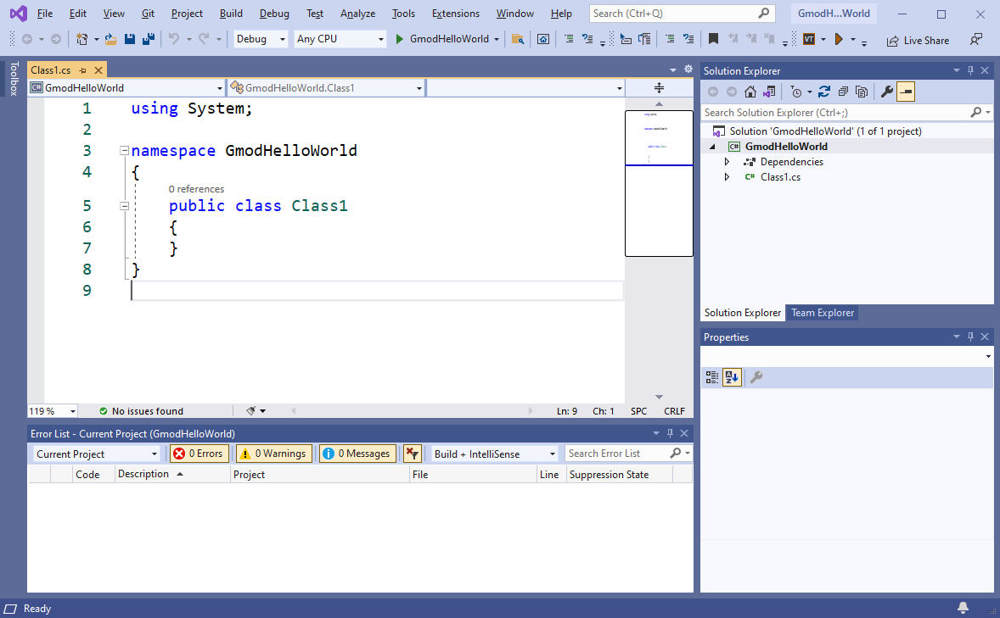
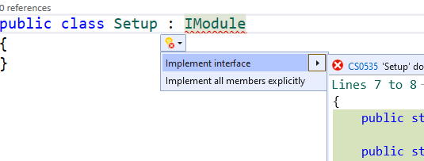
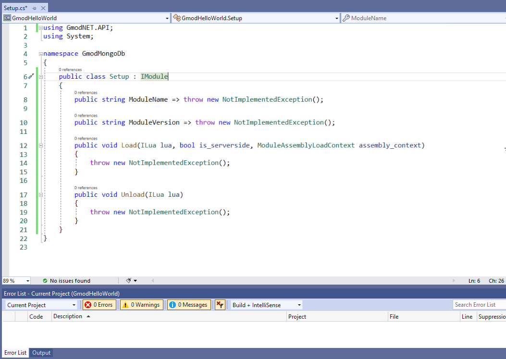
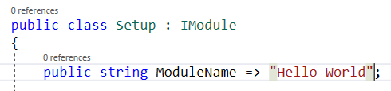
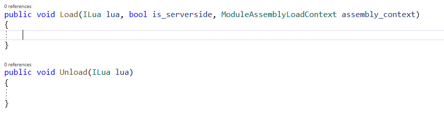
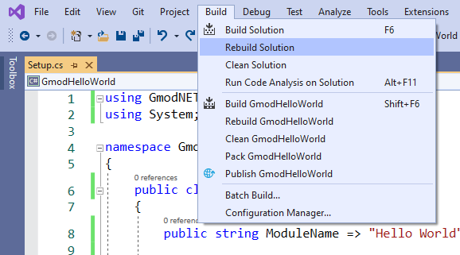
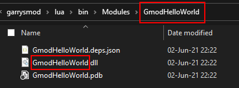

A quick start with 'Hello World'
At the end of this tutorial you will have created and installed your own module that simply states: 'Hello World!' in the console. We will write our module using a bit of C# (pronounce C-Sharp) code.
Requirements
- Visual Studio 2019
- Ensure the .NET desktop development Workload is installed in Visual Studio
- Ensure at least these individual components are installed:
- .NET SDK
- NuGet Package manager
- C# and Visual Basic
- .NET 5.0 Runtime
- Windows 10 (8.1 and 7 SP1 may also work, see Visual Studio requirements)
- An internet connection
- A copy of Garry's Mod installed through Steam
- Approximately half an hour of your time and patience (including downloading and installing Visual Studio)
Preparations
- Make sure you are on the Garry's Mod
x86-64Beta branch - Install Gmod.NET in Garry's Mod following the instructions in the README
Tutorial Overview
These are the subjects we will be discussing in order to create our .NET Core module, written in C#, that will simply print 'Hello World!' to the console:
- Creating a Gmod.NET module project
- Choosing the project type Class Library (.NET Core)
- Including the GmodNET.API NuGet Package into our project
- Setting up the basic code structure
- Implementing the GmodNET.API IModule Interface
- Writing module code
- Printing 'Hello World' to the console
- Building, installing and testing our module
Let's get started!
1. Creating a Gmod.NET module project
- Start Visual Studio 2019
- Click the Create new project option
- Click the project type Class Library (.NET Core) (Use the search box to find it faster)
- Note: Is this project type missing? Double-check that you installed the .NET desktop development workload and the other required components.

- Click Next or double-click the project type
- Choose the project name "GmodHelloWorld" (the naming convention is PascalCase/UpperCamelCase)
- Click Next
- As the Target Framework choose .NET 5.0

Visual Studio will generate a Class Library (.NET Core) project for us. When it's done you will see this screen:

- Go to View and click Error List. This will help us find problems with our code later. You only have to do this once.
Let's add the GmodNET.API NuGet package to our project.
- In the toolstrip Go to Tools > NuGet Package Manager > Manage NuGet Packages for Solution...

- Go to the Browse tab
- In the search bar search for "GmodNET.API"
- Click GmodNET.API
- On the right-hand side check the box in front of your project name (GmodHelloWorld)
- Click Install. It may take a second to download and install. VS2019 will say Ready in the bottom left when it's done doing whatever it's doing.
We have now created an empty project with which we can start making Gmod.NET modules. You will repeat this chapter every time you wish to create a new Garry's Mod module.
2. Setting up the basic code structure
Right-click Class1.cs in the Solution Explorer
Click Rename and let's give this file a better name (read on below this image)

We will name the file "Setup.cs". (the file name convention is UpperCamelCase with no spaces, nor any special characters)
Always click yes when you get the dialog asking you "Would you like to rename all references from Class1 to Setup?".
We will now write our first code, instructing Gmod.NET that this code file is a module.
- Put your cursor behind
public class Setupand type:: IModule
Check that you've written the code exactly (with a capital I and capital M) like in this screenshot:

Visual Studio thinks it can even help us with this error. It's saying Show potential fixes and in this case one of the suggestions actually makes sense. (These suggestions can be wrong sometimes, you can't fully rely on it)
Click Show potential fixes
Now click the top option using GmodNET.API;
Note: If this option is missing then verify you installed the GmodNET.API NuGet package.

The suggestion to add using GmodNET.API; adds that same line of code to the top of our file.
Let Visual Studio help us implement the IModule interface (= to add the functionalities that the interface wants us to add):
- Hover your cursor over the error at IModule
- Select Show potential fixes
- Choose the suggestion Implement interface

The generated code shows us how we can implement our interface. The clear names for these functionalities also show us what we need to do and how we need to fill it in.

Let's go over the generated code, step-by-step and fill in the "empty spots".
First fill the Property
ModuleNamewith our module name:
Next fill the Property
ModuleVersionwith a version like "0.1.0".
The load-method is called when our module is loaded. We will fill it with code in the next chapter.
The Unload-method is called when our module needs to clean up after itself. Unload is irrelevant for our Hello World example.
- Remove
throw new NotImplementedException();from both the Load and Unload methods:

That's it! We've setup our code and are ready to get to the main subject of today: making our module print 'Hello World!'.
3. Writing module code
After all those instructions we finally get to the most important part of this module: actually printing 'Hello World!' to the Garry's Mod console.
First copy the following code inside the Load method between the curly brackets:
lua.PushSpecial(GmodNET.API.SPECIAL_TABLES.SPECIAL_GLOB); lua.GetField(-1, "print"); lua.PushString("Hello World!"); lua.MCall(1, 0); lua.Pop(1);Confirm the entire code file
Setup.cslooks like this:

The code we just added to the Load method will be executed when Gmod.NET loads our module. The code simply prints the string "Hello World!" to the Garry's Mod console. We use the Lua print function to achieve this.
For more information on the Hello World code you copied check out: A comprehensive introduction to Visual Studio, C# and the 'Hello World' code.
4. Building, installing and testing our module
Building
- In the toolstrip go to Build and click Rebuild Solution. This will package our module ready for redistribution.

Go to your solution location in Windows File Explorer.
Inside your solution navigate to where the module was built:
<your solution location>\GmodHelloWorld\bin\Debug\net5.0\If your module built successfully you'll have the following files. We'll call these "the built module files".

Installing
Open another File Explorer window and go to your Garry's Mod folder and then
garrysmod\lua\bin\Modules.- Note: If you don't see a bin folder in the lua folder, create it. If you don't see a Modules folder inside the bin folder, create it.
**Create a folder inside
garrysmod\lua\bin\Moduleswith the exact name of your module. In our case we name the folder GmodHelloWorld.Copy all the built module files to the folder we just created at
garrysmod\lua\bin\Modules\GmodHelloWorld\:

The module is now installed and Gmod.NET should be able to find it.
Running & Testing
Start Garry's Mod
Start a singleplayer game
Open the Developer Console
In order to load our module execute this Lua function:
dotnet.loadfor example:lua_run dotnet.load("GmodHelloWorld")Check the console. Because we're loading the module on the server (using
lua_run), our "Hello World!" message will appear in a blue color:

🎉 Yay! Success! We've created a .NET module for Garry's Mod.
Making changes
You'll have to rebuild and reinstall the module when you make changes in C#.
Unload the module:
- To unload the module execute this lua function:
dotnet.unload("GmodHelloWorld") - In our case we use
lua_run dotnet.unload("GmodHelloWorld")to unload the module serverside (because we loaded it withlua_runon the server before)
- To unload the module execute this lua function:
Now that the module is unloaded you can overwrite it with the new files.
Reload the module the same way we loaded it before (with
dotnet.load("GmodHelloWorld"))